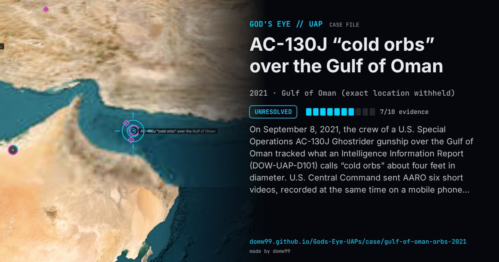

AC-130J “cold orbs” over the Gulf of Oman

On September 8, 2021, the crew of a U.S. Special Operations AC-130J Ghostrider gunship over the Gulf of Oman tracked what an Intelligence Information Report (DOW-UAP-D101) calls “cold orbs” about four feet in diameter. U.S. Central Command sent AARO six short videos, recorded at the same time on a mobile phone pointed at the infrared sensor display. In most of them a small area of contrast stays in the centre of the sensor’s view; in two overlapping clips a larger and a smaller one cross the frame and come back. The Department of War released them as DOW-UAP-PR117 to PR122 in 2026, without a determination.
Explanation
AARO released the six clips in 2026 as unresolved. They are phone recordings of the gunship’s infrared display, not the sensor data itself, which limits what can be measured; the accompanying Intelligence Information Report describes “cold orbs” about four feet across.
What was seen
Shape: “Cold orbs”, approximately four feet in diameter
Witnesses: The crew of a U.S. Special Operations Forces AC-130J gunship
Duration: Six clips of 2 to 34 seconds
Sources
Browse
- 2020s
- Unresolved
- Photo and video cases
- Official government documents
- Military witnesses
- Video footage
- Infrared or other sensor data
- Spheres and orbs